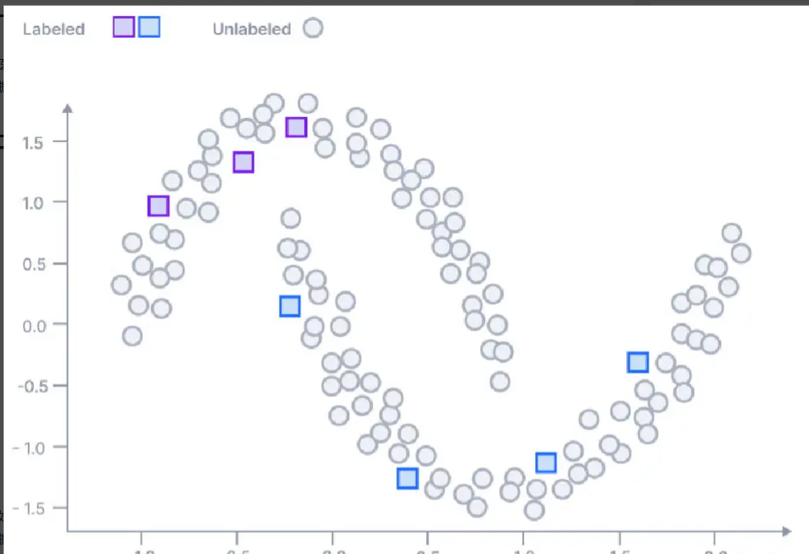
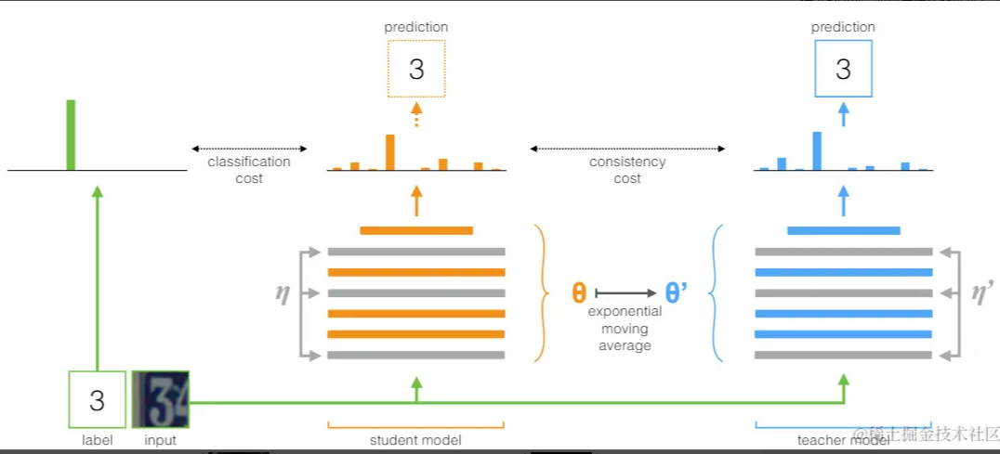
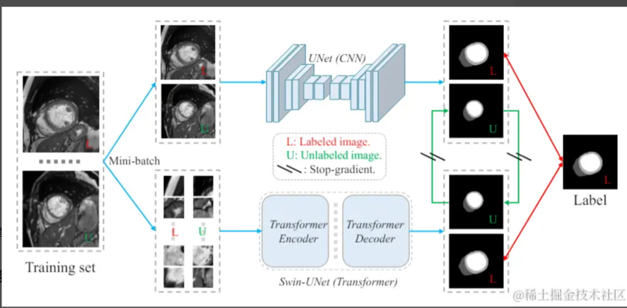
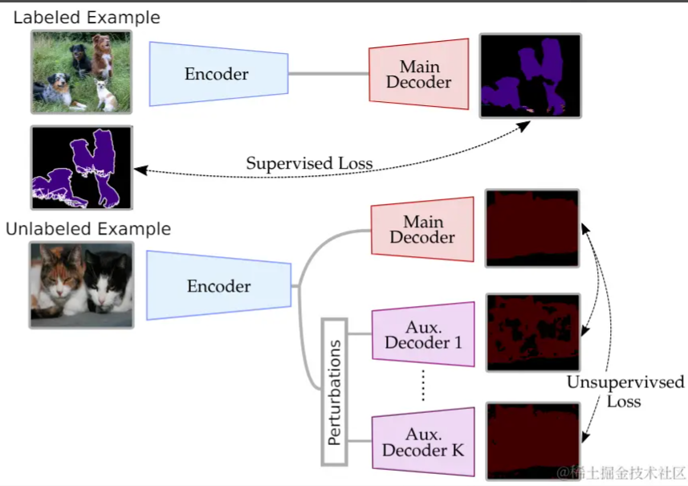
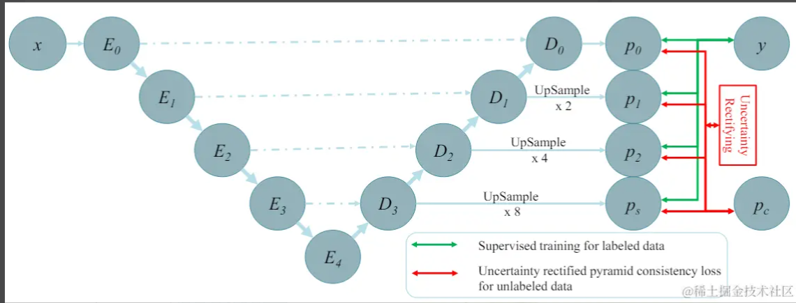
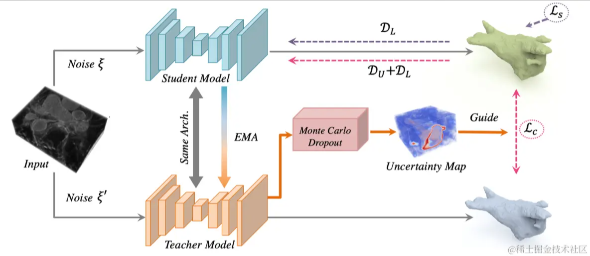
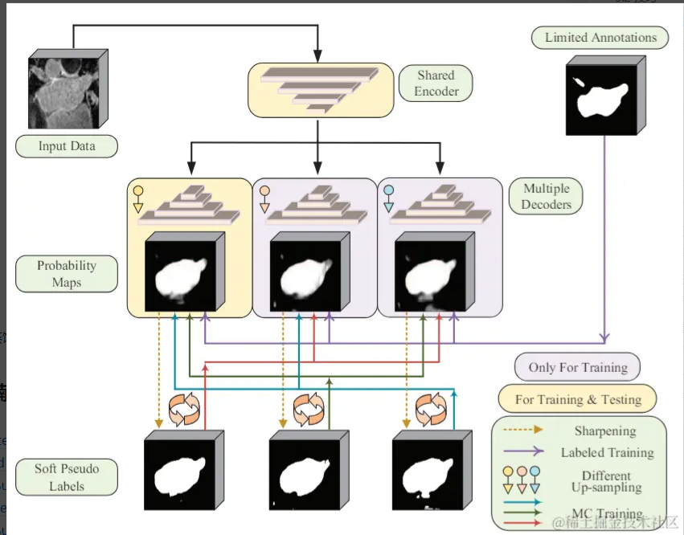

一、背景
医学图像的标注成本十分高昂，其标注数据规模往往较小。通过半监督学习的方法，利用大量的未标注数据，可有效提高模型的学习能力
二、基本分类
如上图所示，仅有正方形的数据点，无法学习真实的数据分布，通过引入大量的未标注的圆形点，可得知数据的真实情况，这便是半监督学习的基本原理。
对于有标注的输入样本，因为有标签作为监督信号，所以很自然可以定义损失函数。对于未标注样本，需要自行构建监督信号。基本可分为两大类，一类是熵最小化约束，使模型趋向于得出高置信度的预测结果，另一类则是一致性约束，对输入或模型添加各种干扰，但模型依然具有稳定的输出。一致性约束是本文的重点，简单来说，就是通过各种奇技淫巧，使得模型对一个输入，具有不同的输出，然后让两个输出趋向一致，这就能构建出监督信号
三、一致性约束
3.1 基本架构
3.1.1 mean teacher
 Mean Teacher模型是经典的半监督方法，学生模型通过EMA方法更新参数，然后约束教师模型和学生模型之间的一致性3.1.2 多个子模型
 直接构建两个独立的子模型，一个是卷积架构，另一个是transformer架构3.1.3 多个解码器
多个解码器
3.1.4 多尺度
 使得解码器的不同层次输出保持一致性3.2 技巧
基本架构应该就是上述的模型，后面就是使用各种技巧去提高模型的性能
3.2.1 不确定性
两输出中肯定存在某些区域更重要，通过不确定性对其加权
3.2.2 损失函数
类似知识蒸馏的方法，对输出取softmax操作时，添加温度参数T，使得具有更多信息，再去保持一致性。
参考文献
[1] Mean teachers are better role models: Weight-averaged consistency targets improve semi-supervised deep learning results
[2] Semi-Supervised Medical Image Segmentation via Cross Teaching between CNN and Transformer
[3] Semi-Supervised Semantic Segmentation with Cross-Consistency Training
[4] Efficient Semi-Supervised Gross Target Volume of Nasopharyngeal Carcinoma Segmentation via Uncertainty Rectified Pyramid Consistency
[5] Uncertainty-aware Self-ensembling Model for Semi-supervised 3D Left Atrium Segmentation
[6] Mutual Consistency Learning for Semi-supervised Medical Image Segmentation